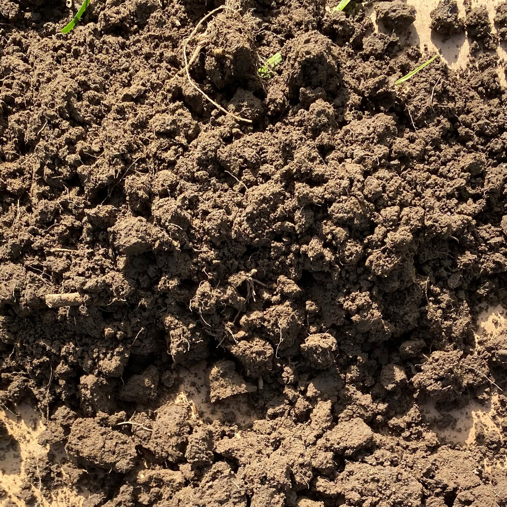
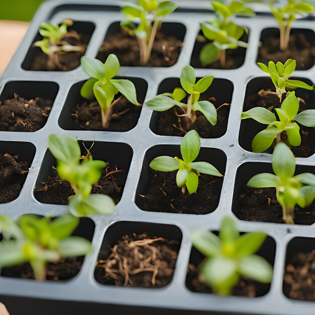
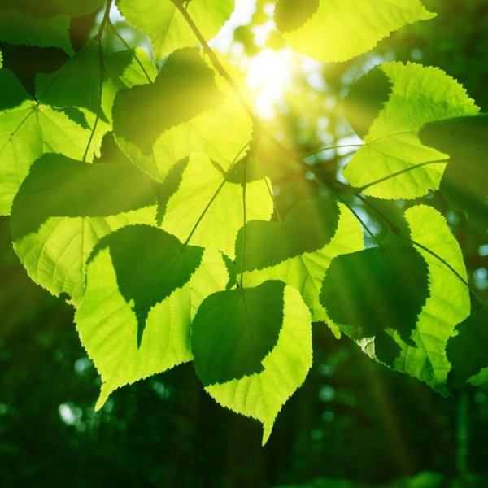

⚠︎ ⁝ Soil rules
🪴The Crucial First Steps
//////////////////////////////
//////////////////////////////
Seeds must be sow without the shell (if it
has one) and brand new (taken out recently), 3cm or less under the
surface. They grow easy in rain times so make sure the season time is right.
They share properties, so put more than 1 seed in the same pot.
Soil is gather from the first 10cm of ground, which has to be a green place.





ⓘ ⁝ Now What?
📋Post-Planting Must-Dos
The plant must be moist at first, not wet,
not dry (at night or morning), with a sharp stick you can know how
moist is the soil. If leaves are yellow and soft, less water, if they feel crunchy,
more water. They start growing about a week after sow them,
they like company, so put them nearby other plants, and while they grow
they'll need more sunlight (if were talking about a tree/sun plant).